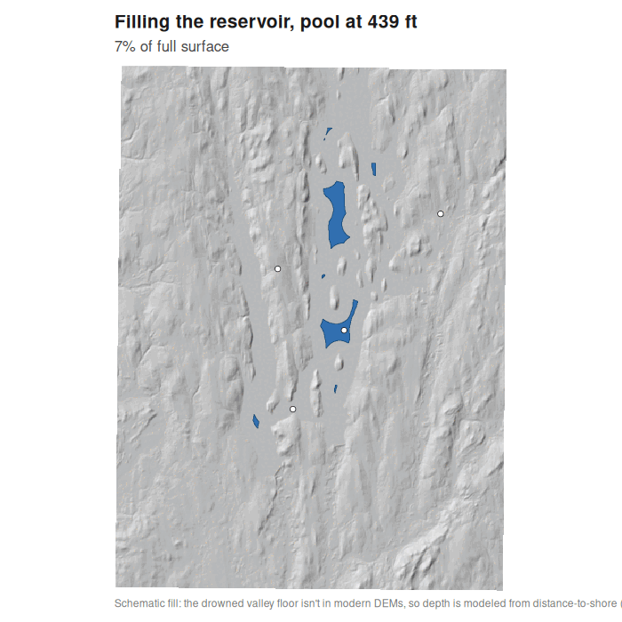

The Quabbin Reservoir and the Lost Towns of the Swift River Valley
Between 1938 and 1946, Massachusetts created the Quabbin Reservoir by damming and flooding the Swift River Valley. Four towns — Dana, Enfield, Greenwich, and Prescott — were disincorporated on 28 April 1938, and about 2,500 residents were relocated. The reservoir was built to supply metropolitan Boston, roughly 105 km (65 miles) to the east.
This is a multi-layer GIS study: several spatial layers that, read together, describe how the reservoir was sited and what it replaced. It is built in R from open public data — terrain, the reservoir surface, the watershed, modern municipal boundaries, and decennial census population.
The analysis ships as a reproducible pipeline. A single Rscript run_all.R pulls a DEM from AWS Terrain Tiles, derives the reservoir from its 530-foot full-pool surface, fetches USGS watershed units and US Census boundaries, renders the figures below, generates the reservoir-filling animation, and exports the GeoJSON used by the interactive map. Downloads are cached, and each network call falls back to a documented default if a service is unavailable.
Read together, the layers show a valley whose terrain forms a natural basin, four towns that had been losing population for decades before construction, and a present-day map in which their land has been absorbed by the surrounding municipalities.
Further layers extend the study: decennial US Census counts for all four towns (1900–1920); an animation of the reservoir filling from the valley floor to the 1946 full pool; the aqueduct route carrying the water about 105 km east to metropolitan Boston; and an interactive map combining these layers, with an adjustable pool level, the 1893 pre-reservoir topographic map, and LiDAR overlays.
A final set looks at what survives above water: 1 m LiDAR of Dana Common and the Prescott Peninsula, where old road traces and cellar holes are still legible in the bare-earth relief, and a map of the valley's 1893 road network with the present reservoir overlaid to show which roads drowned.
Filling the reservoir, 1939–1946
After Winsor Dam was closed in 1939, the Swift River backed up for seven years, reaching the 530-foot full pool in 1946. The animation below raises the water in equal-area stages up the terrain model. The interactive LiDAR imprint explorer goes further: on the land that never went under, it lets you pan and zoom across each town in 1 m bare-earth relief to hunt the relict roads, paths and field walls still imprinted in the ground, toggle the auto-traced lines and the 1893 ground-truth survey, raise the pool to see what drowned, and follow the aqueduct east to Boston.
